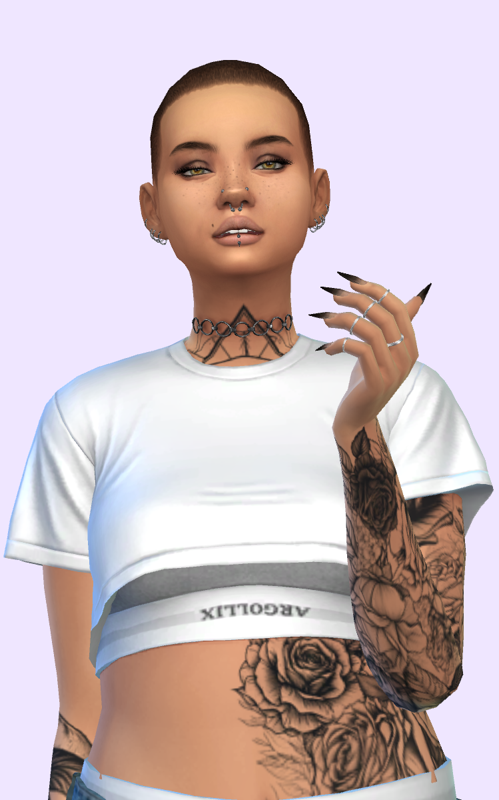
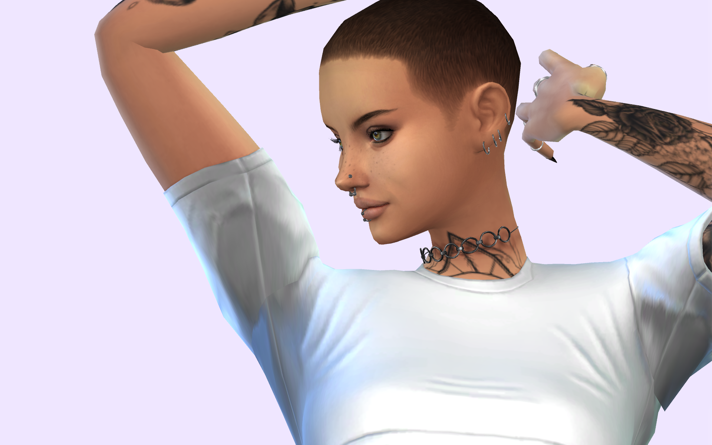
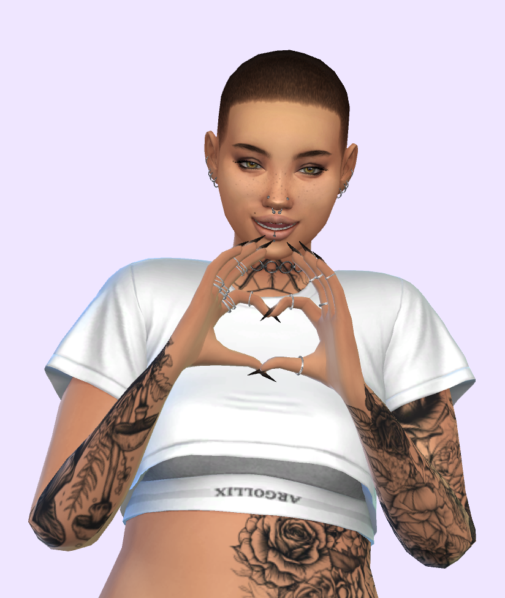
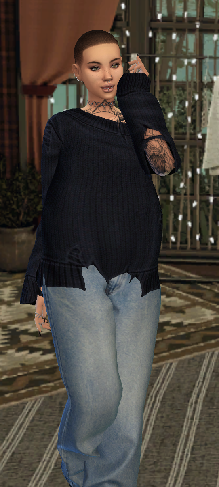
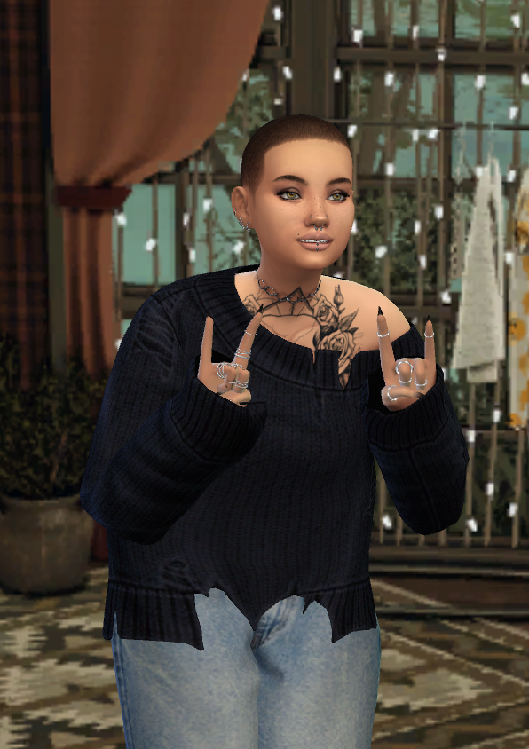
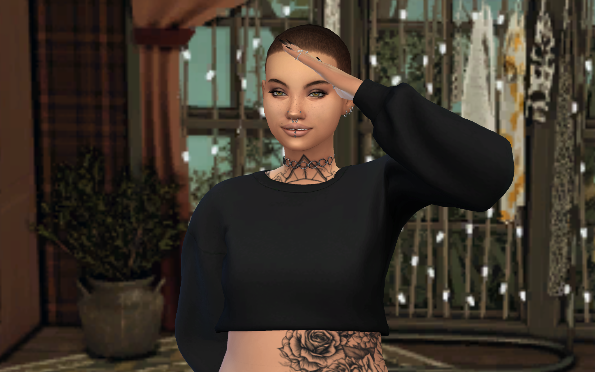
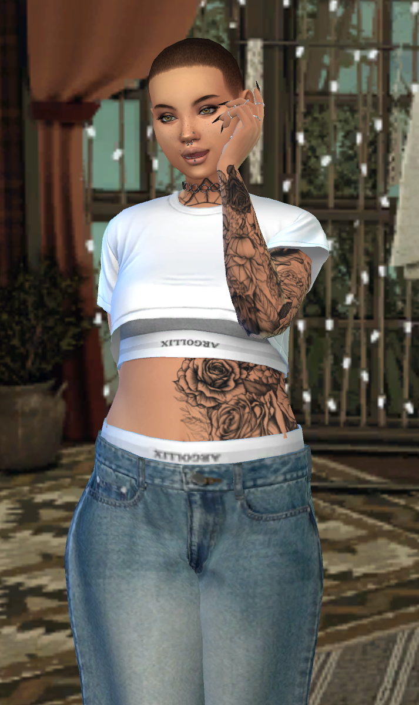
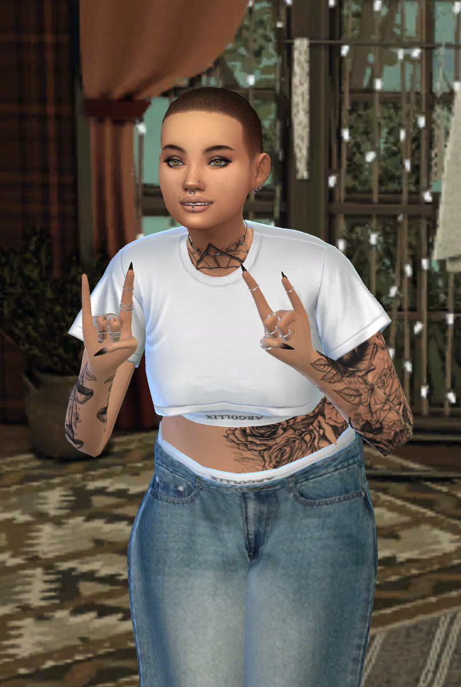
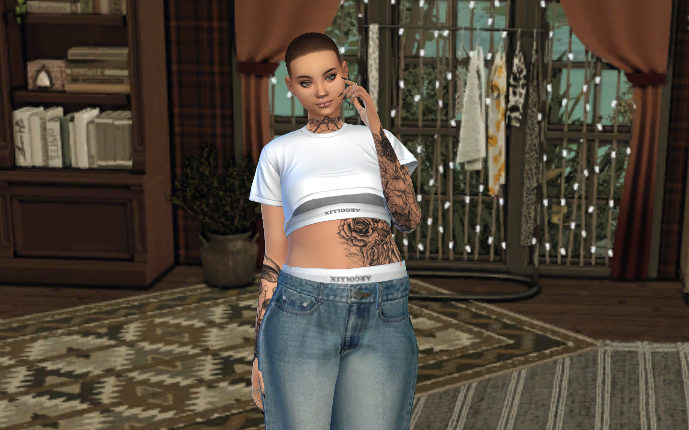
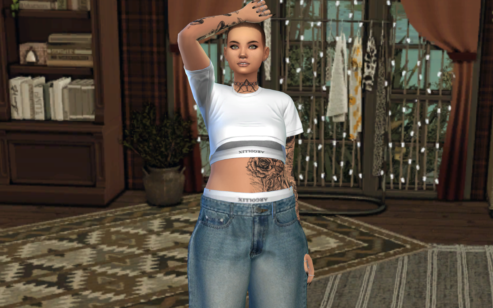
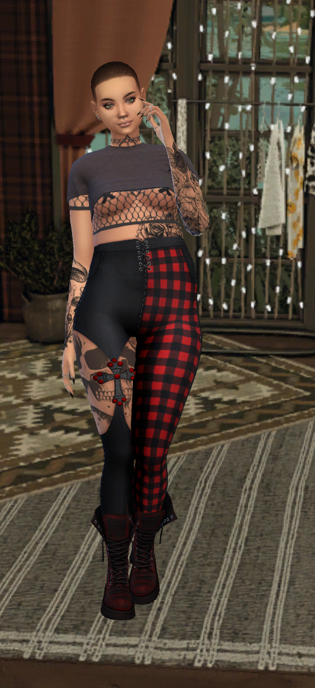

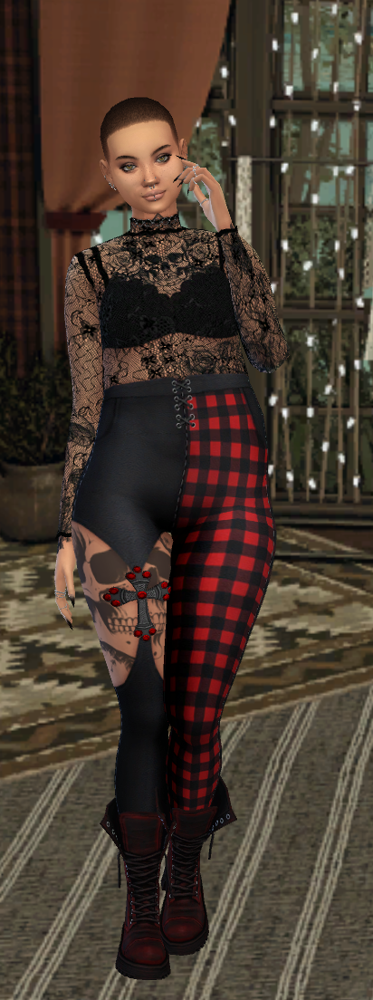

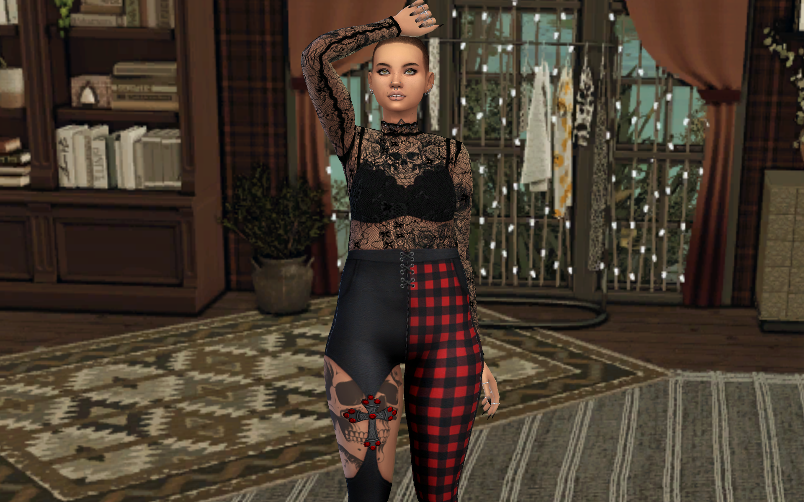
┌────────────────────────────────────────────────┐
│ 🏰 MANOIR VICTORIEN — Façade + Entrée │
│ (maison au fond du terrain) │
├──────────────┬─────────────────────────────────┤
│ 🌊 MARE │ 🌳 JARDIN SAUVAGE │
│ Nénuphars │ Herbes folles, arbres, fleurs │
│ Fontaine │ │
├──────────────┤ 🏹 ZONE ENTRAÎNEMENT │
│ 🌸 ALLÉE │ Arc + Épée (semi-caché) │
│ Pierre │ │
│ sinueuse ├─────────────────────────────────┤
│ │ 🌿 PLANTES & BUISSONS │
│ ENTRÉE │ Buis taillés, rosiers │
│ 🚪 GRILLE │ │
└──────────────┴─────────────────────────────────┘
↑ Rue / Entrée principale